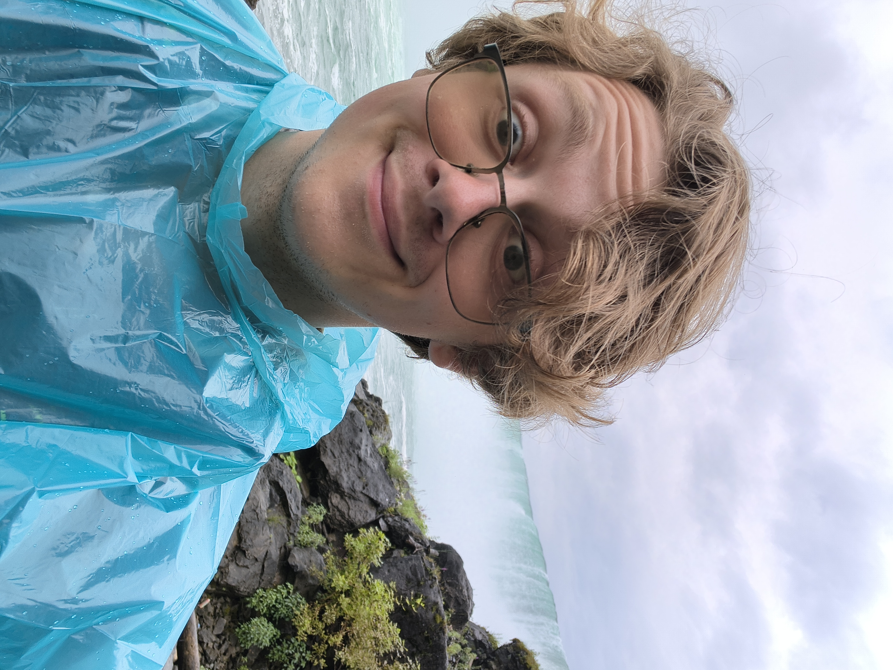

Bachelor of Education Student
Hello! My name is Thomas Clipston, and I am currently a second-year Bachelor of Education student at Wilfrid Laurier University. I have an honours degree in computer science from Wilfred Laurier University. I enjoy learning new things and developing skills that I can bring into the classroom to support and inspire my students.
Passionate Learner
I am deeply committed to continuous learning, both as an educator and as a lifelong learner. I actively explore new teaching strategies and strengthen my own academic foundations to better support my students. For example, I regularly work to enhance my mathematics skills so I can teach with confidence and clarity. I also enjoy learning new coding techniques, which allows me to introduce students to problem-solving and computational thinking in meaningful ways.
Proud Educator
I take great pride in supporting students throughout their learning journeys and helping them build confidence, skills, and a love of learning. I believe that knowledge is one of the greatest gifts an educator can offer. As I move toward a full-time teaching role, I aspire to provide additional support, such as offering extra help during lunch hours for students who may need it. I take great pride when a lesson goes well and love seeing my students reach their potentials.
Open to New Ideas
I am always open to new ideas and perspectives from students, colleagues, and school leadership. I actively seek feedback and reflect on my teaching practice to improve how my classroom operates. I also participate in professional learning opportunities and seminars to further develop my academic understanding and teaching skills.
Teaching Philosophy

Throughout my experiences in education, I have begun to develop a mindset that reflects the role and
responsibilities of a teacher. I believe that teaching is not only about delivering content, but about
creating an environment where students feel supported, valued, and capable of success.
I strive to approach each lesson with intentionality, adapting my instruction to meet the diverse needs
of my students while encouraging curiosity and critical thinking. I recognize the importance of reflection
in my practice, and I continuously work to grow by learning from my experiences, my students, and my peers.
As I continue my journey in education, I am committed to building a classroom culture that fosters respect,
engagement, and a genuine love of learning, while continuing to shape my identity as an effective and
thoughtful educator.